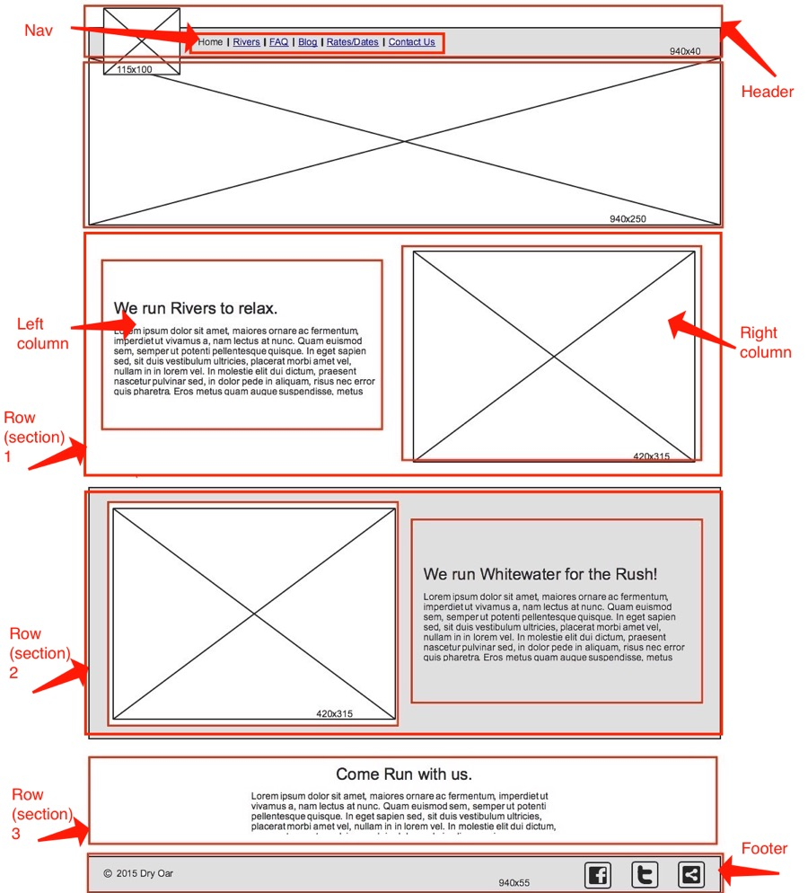

Wireframe Introduction
Wireframes are like a blueprint for your web or application design. They provide a clear overview of the pages structure, layout, information, flow, functionality, and intended behaviors. Just like designing an actual building, our wireframe should start simple. If you were going to design a new apartment complex for example, we should probably start with the size and layout of the property and not the units themselves. Wireframes are the same, start simple and with each iteration add more and more functionality to the site or application. This week we will focus only on the HTML. In a real web development project you would follow a similar pattern, build the HTML first, and then adding CSS.
In this assignment your goal is to take a wireframe and translate it to the pages HTML layout. We are not adding any styles (CSS) to this HTML page yet. Everything will stack vertically for now and look nothing like the finished wireframe. Here is the wireframe you will be using. Please note that we have drawn in red on this wireframe to indicate the thought process a web developer would go through when they receive a wireframe.

Assignment
-
Header
Let's work on creating the HTML for this wireframe working from the top down. First we need a file to work in. You may work on this file directly in the Glitch editor or locally (on your computer) using VS Code. If you create the file locally you will need to copy-paste the code into Glitch later. Lets make the Glitch file now. Open your Glitch project and click on New File in the upper left sidebar. Name the file: wireframe.html
Now lets add the bare bones of this new HTML document. Please copy-paste the following code into your wireframe.html document; if your working locally that is fine, once this is assignment is done don't forget to copy the code for this page to Glitch.
<!DOCTYPE html> <html lang="en-us"> <head> <title>Wireframe Demo</title> <meta charset="utf-8"> <meta name="viewport" content="width=device-width, initial-scale=1"> <link rel="stylesheet" href="styles.css"> </head> <body> ...<!-- Remember the rest of the pages HTML will go in here. --> </body> </html>Now according to the wireframe we need a
headerwhich contains the siteslogoand mainnav(navigation). It is good practice to wrap elements in parent containers when we plan to alter them in big ways. For example the sites navigation will be anul(unordered list) which normally stacks vertically. We'll need to change it with CSS later to be horizontal. Thenavblock will be the wrapper for theul. Now we just need to make sure to add a wrapper for our logo so we can more easily keep the logo on the left side of the page away from the navigation links. The completed code you can add to the page is below.Do not just blindly copy-paste this code. Take a minute to deconstruct it and understand what it's doing.
<!-- HEADER --> <header> <div id="logo-wrapper"> <img id="logo" src="https://via.placeholder.com/100x50"> </div> <nav> <!-- We are not copying all the links from the wireframe --> <ul> <li> Home </li> <li> About Me </li> </ul> </nav> </header>You will notice we used a service called Placholder to load a temporary logo image. We also did not copy all the navigation links from the wireframe. Because this is our first iteration of the wireframe we don't need them all yet; they will probably change before we reach production (public release) anyways. Don't forget to indent (tab) your code properly.
-
Banner Image
The next part of the wireframe appears to be a large banner image. This is a common design for the home page of a website. Sometimes an image carousel is used for the banner image. Image carousels cycle between images by rotating different banners in and out of view. For now lets setup the HTML for this banner area. If the design team decides to add an image carousel in the future, we can update the HTML to work with it then.
Here is the HTML for the banner image area, please add this to your file. Do you notice anything similar about this HTML code? This code mimics the same code we used for the sites logo, the main difference being we are not wrapping this code in anything else, whereas the logo code was placed inside the
header.<!-- BANNER IMAGE --> <div id="banner-wrapper"> <img id="banner" src="https://via.placeholder.com/1000x150"> </div> -
The First Row
After the banner image the page continues to layout content in rows but splits the content into two columns. Remember to put your developer hat on and approach the design by visualizing it from the outside in. Starting from the outside we need a container that will wrap the inner contents. We could use a
divelement, or the semanticsectionelement since this wireframe is for our home page.sectionelements should be used for a specific purpose and often contain a headline:h1–h6. This is the exception to the headline rule. Well headings normally should not be used out of order,section's are treated as isolated areas independent from the rest of the document; at least as far as headings are concerned. The following quote from the specs for thesectionelement provides a little more guidance:The
The section element specificationssectionelement is not a generic container element. When an element is needed only for styling purposes or as a convenience for scripting, authors are encouraged to use thedivelement instead. A general rule is that thesectionelement is appropriate only if the element’s contents would be listed explicitly in the document’s outline.To put that in simpler terms,
sectionelements should only be used when the content inside them would make sense completely on their own. If the rest of the pages content suddenly disappeared, ask yourself, would thissectionstill make sense and be complete on it's own?
Next we will need a container for our left and right column of content. This should be a
divelement. Inside these inner containers we add the column content similar to how we have done previously. Here is what the completed code for the first row looks like. Notice how we keep nesting elements inside each other, working our way inward:<!-- FIRST ROW --> <section> <div class="left-column"> <h2>We run rivers to relax</h2> <p> ... </p> </div> <div class="right-column"> <img src="https://via.placeholder.com/300x300"> </div> </section> -
On Your Own Now
Now that you have a little experience creating the HTML for a wireframe, continue creating the HTML until you complete the rest of the design. Remember all you are creating is the HTML for the wireframe, we will add the CSS later; please reread the introduction section of this page if you are confused about these instructions.
You will need to create the second row, third row, and footer HTML. Don't forget to use semantic elements when they make sense to, and don't forget to add a comment for each section (row) of HTML that you add to the page.
Once you have finished, if you were coding your page outside of Glitch, make sure to copy the pages HTML into the wireframe.html file we created earlier in our Glitch project. You will then need to update the index.html files navigation to include a link to the new wireframe page. If you do not remember how to do that, open the index.html page and take a look at what is inside the
navelement. -
Complete Assignment
Follow the instructions in canvas to prove you have completed this assignment. To get the URL to your live Glitch site click on Show in the upper left and then New Window. When the new tab loads with your live site copy the URL from the address bar.
Grading:
Do not submit the URL to your Glitch profile or your Glitch editor, it must be the URL to the wireframe page on your live site.